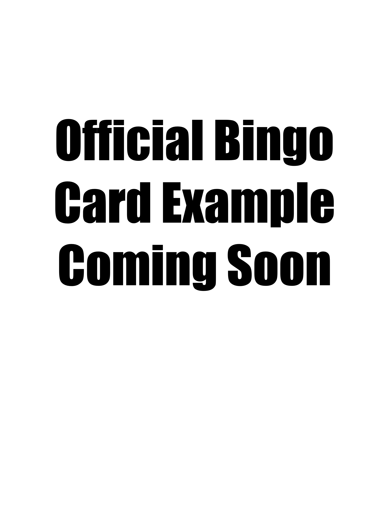

FIGHTING GAME
BINGO NIGHT
IMPORTANT:
This event is still being planned. As such
details on this page may be missing and are subject to change. Thank you.
Inspired by For Honor's Brawl gamemode, Absolute Anarchy is a brand new take on the Fighting Game Bingo Night formula. Every single game is set up centered around 2v2 combat. Players will register as pairs (or will be paired later). Some games feature real-time 2v2, with all four players duking it out simultaneously. Others will feature tag-team mechanics with players switching off being the active combatant at will.
| Date and Time | TBD |
|---|---|
| Location | Milford, NH |
| Signup | Link to be posted |
It is possible there will be 9 or even 10 games in play. Should this happen the number of squares per game will be accordingly reduced, and the number of general challenges increased.

The Games
For Honor and Super Smash Brothers Ultimate
For Honor and Smash Ultimate make a return on the roster. For Honor was the inspiration behind the event, and Smash already supported team fights. The challenges are changed however.
For Smash Ultimate the challenge will be: TBD
For For Honor: Win as a random hero.
Mortal Kombat Komplete Edition
Released in 2012 this lost gem is the fully expanded version of Mortal Kombat 9. Unfortunatly this game has been displaced by modern entries and lost to time, but disks for the console version are not too expensive.
The reason this particular version of Mortal Kombat is being employed is it's the only game in the series to be built around tag-team play.
The Challenge: TBD
Tekken Tag Team Tournament 2
Tag Tournament 2 was released in 2011 and was likely a major reason that Mortal Kombat 9 got tag-team in the first place. It followed the classic Tekken format but included smooth at-will tag team play.
Unlike in Mortal Kombat Komplete, the offscreen characters slowly regenerage health, but the team loses if either fighter dies.
The Challenge: TBD
Mario Kart Double Dash
The 4th installment in the Mario Kart series, Double Dash was the GameCube entry in the series. The game features karts piloted by two characters, one of which is steering and the other of which uses items. As a result it features a 2v2 mode where each pair of players pilots one kart.
We will be playing Balloon Battles.
The Challenge: TBD
Yes we know this isn't a fighting game lol
Shovel Knight Showdown
If your question is why my answer is: My shovel strikes for justice. Showdown is a platform fighter set in the shovel knight universe, featuring characters and enemies from Shovel of Hope and its spinoff games.
Players compete for the collection of diamonds.. most of the time. Since this is a chaotic title we might keep randomized gamemode on.
The Challenge: TBD
Star wars Battlefront 2
Star Wars Battlefront II is a large-scale multiplayer shooter-fighter developed by DICE in collaboration with Criterion Games and Motive Studio, and published by Electronic Arts in 2017. Set across multiple eras of the Star Wars universe, the game features large online battles and small online skirmishes.
We will be playing 2v2 Hero Elimination, running Jedi and Sith in small-scale personal combat.
The Challenge: TBD
Streets of Rage 4
Streets of Rage 4 is a side-scrolling beat 'em up and fighting game developed by Dotemu, Lizardcube, and Guard Crush Games, and published by Dotemu in 2020. Serving as a revival of Sega's classic Streets of Rage series, Streets of Rage 4 modernizes the series' arcade-style combat with hand-drawn animation, expanded combo systems, and both cooperative and competitive multiplayer while preserving the fast-paced action and soundtrack-driven style of the original games.
We will be playing 2v2 team battle.
The Challenge: TBD
General Challenges
Have your taller player win a 1v2.
Have your shorter player win a 1v2.
Games in Contention
Dragon Ball Fighter Z
Dragon Ball FighterZ is a 2.5D tag-team fighting game developed by Arc System Works and published by Bandai Namco Entertainment in 2018. Based on the long-running Dragon Ball series, the game features fast-paced three-on-three battles. Its combat system combines traditional fighting game mechanics with high-speed movement, aerial combos, and cinematic special attacks designed to recreate the look and intensity of the anime.
We will be trying to jury-rig the 3v3 mode to be 2v2.
Rivals of Aether 2
Rivals of Aether II is a platform fighting game developed and published by Aether Studios and released in 2024. As the sequel to Rivals of Aether, the game expands on the original's fast-paced movement and elemental character designs while transitioning to fully 3D visuals. Players battle by launching opponents off the stage using advanced movement techniques, aerial combat, and character-specific abilities inspired by competitive platform fighters.